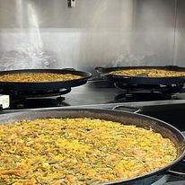
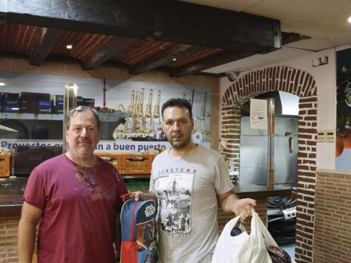
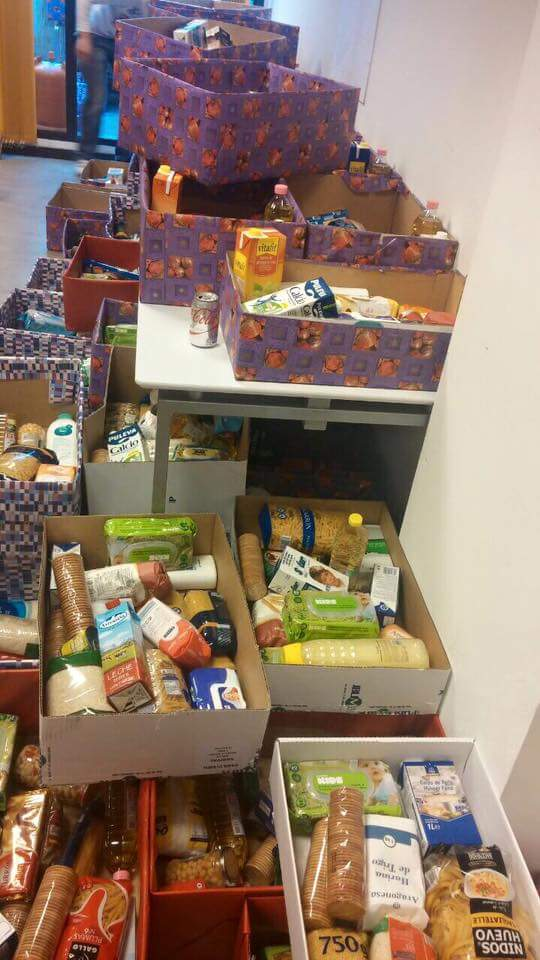
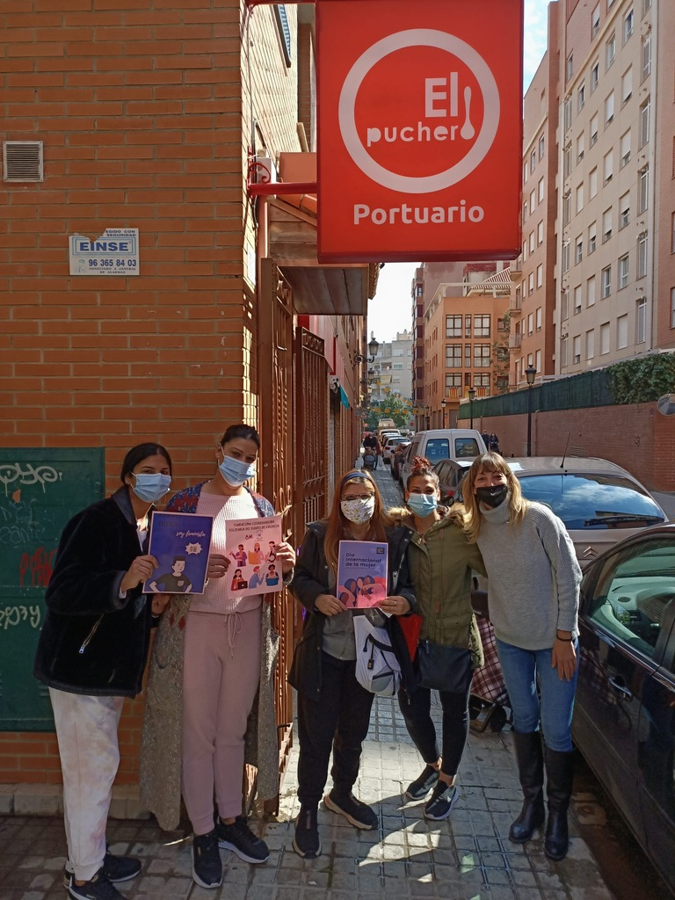

Un plato de comida Alguien se queda sin trabajo. Sin fuente de ingresos, con niños, hay que pagar el alquiler, sube el IPC y las deudas aprietan. El subsidio de desempleo se acaba y el ingreso minimo vital no se tramita lo suficientemente rapido. y llega un dia que hay que elegir si comer o pagar la luz...


Y ahi está Coordinadora Sus trabajadoras sociales evaluaran personalmente cada caso, no solamente para discriminar a los que sean acreedores al recurso, sino para tratar de dar asistencia para solicitar todas las ayudas disponibles, evaluando las necesidades de cada caso, y ante la necesidad, proporcionando acceso al recurso de alimentacion de Coordinadora
COORDINADORA SOLIDARIA, en caso de necesidad, proporciona asistencia de alimentacion a las familias, en la modalidad de "casa de comidas". Todos los dias se cocinan platos calientes para entregar las racciones correspondientes a las familias, asi como cajas de asistencia para ser consumidas en los hogares y evitar el estigma de ir a comer en un comedor social.


COORDINADORA SOLIDARIA posee dos establecimientos: El Puchero Portuario y el Puchero Orriols, ubicados en zonas de vulnerabilidad. 200 familias entre las que se cuentan refugiados de guerra, inmigrantes sin papeles, familias en riesgo de exclusion, mayores abandonados y personal derivado de todas las asociaciones publicas y privadas de Valencia que no tienen otro medio de subsistencia.